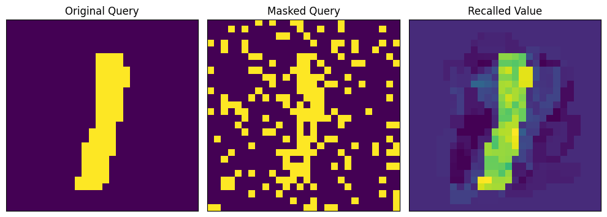
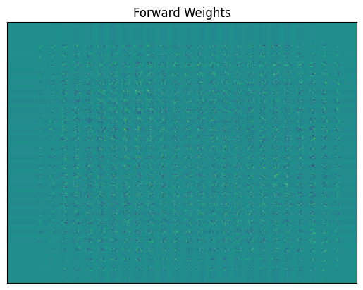
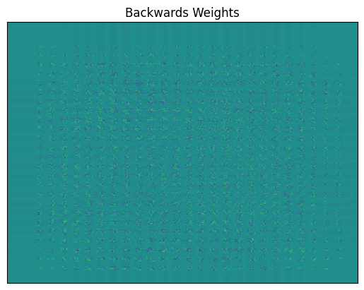
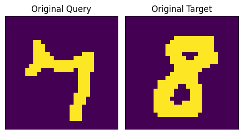
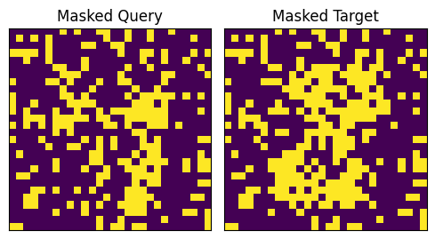
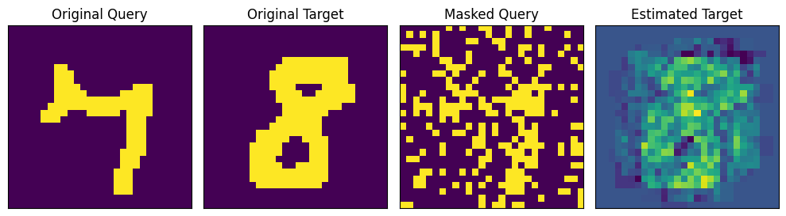
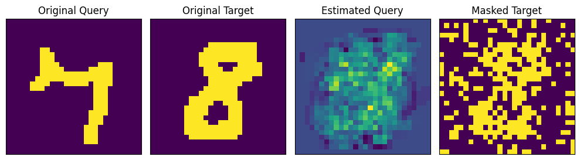

DATA_DIR = "../data/mnist"
pxw, pxh = 28, 28
def transform(data):
data = np.array(data, dtype=jnp.float64)
data = rearrange(data, "w h -> (w h)")
data[data > 0.0] = 1.0
data[data == 0.0] = -1.0
return data
mnist_train = MNIST(DATA_DIR, train=True, transform=transform)
mnist_data_loader = DataLoader(mnist_train, batch_size=128, shuffle=True)
mnist_it = iter(mnist_data_loader)
mnist_data, _ = next(mnist_it)bidirectional
Implementation of bidirectional associative memories.
Bidirectional Associative Memories are a kind of recurrent neural architecture which allows for bidirectional recall of stored associated memory patterns. In particular, we will be implementing the Nonlinear Dynamic Recurrent Associative Memory for Learning Bipolar and Nonpolar Correlated Patterns (NDRAM) – a mouthful – as well as a Bidirectional Heteroassociative Memory (BHM) based on NDRAM.
NDRAM
NDRAM (W:jaxtyping.Float[Array,'DD'], lr:float, tr:float)
Nonlinear Dynamic Recurrent Associative Memory for Learning Bipolar and Nonpolar Correlated Patterns.
fit_ndram
fit_ndram (Xi:jaxtyping.Float[Array,'ND'], lr:float, tr:float, num_transmissions:int=1, nsteps:int=2000, key:jax.Array=Array([0, 0], dtype=uint32))
Fit an NDRAM model to the dataset, returning a trained model.
| Type | Default | Details | |
|---|---|---|---|
| Xi | Float[Array, ‘N D’] | The patterns to learn | |
| lr | float | The learning rate parameter | |
| tr | float | The transmission rate parameter | |
| num_transmissions | int | 1 | Optional, number of transmission steps to undertake. Default: 1. |
| nsteps | int | 2000 | Number of training steps to undertake. Default: 2_000. |
| key | Array | [0 0] | Optional, default jr.PRNGKey(0). |
Fit uses the two equations which define the dynamics of NDRAM networks: the weight update rule and the query update rule (1-2) (respectively). The weight update rule is given by: \[ W_{(k+1)} = W_{(k)} + \eta \left( x_{(0)} x_{(0)}^T - x_{(t)} x_{(t)}^T \right), \tag{1} \] where \(\eta\) is the learning rate parameter, \(W_{(k)}\) denotes the weight matrix at time step \(k\), \(x_{(0)}\) denotes the query buffer at the initial time step \(t = 0\), and \(x_{(t)}\) is the current query buffer at time step \(t\).
The query update rule is given by: \[ \begin{align*} x_i^{(t+1)} &= f(a_i), \\ \text{where}~f(a_i) &= \begin{cases} 1,&~\text{if}~a_i > 1,\\ -1,&~\text{if}~a_i < -1, \\ (\delta + 1)a_i - \delta a_i^3,&~\text{otherwise}, \end{cases} \end{align*} \tag{2} \] with unfortunately a flipped notation here of \(x_i^{(t)}\) denoting the \(i\)’th element of the query buffer at time \(t\), and \(\delta\) the transmission rate. These are given by the following methods:
NDRAM.weight_update
NDRAM.weight_update (weights:jaxtyping.Float[Array,'DD'], query_0:jaxtyping.Float[Array,'D'], query_t:jaxtyping.Float[Array,'D'], lr:float)
Perform a weight update.
| Type | Details | |
|---|---|---|
| weights | Float[Array, ‘D D’] | The weights of the network. |
| query_0 | Float[Array, ‘D’] | The initial query state time t = 0 |
| query_t | Float[Array, ‘D’] | The current query state at time t |
| lr | float | The learning rate parameter |
NDRAM.query_update
NDRAM.query_update (weights:jaxtyping.Float[Array,'DD'], query:jaxtyping.Float[Array,'D'], tr:float, num_transmissions=1)
Perform a query update.
| Type | Default | Details | |
|---|---|---|---|
| weights | Float[Array, ‘D D’] | The weights of the network | |
| query | Float[Array, ‘D’] | The query state | |
| tr | float | The transmission parameter | |
| num_transmissions | int | 1 | Number of transmissions to perform. |
Example
def mask(
state: Float[Array, " D"], pct_mask: float = 0.3, key: jax.Array = jr.PRNGKey(11)
) -> Float[Array, " D"]:
prange = np.array([pct_mask, 1 - pct_mask])
return state * jr.choice(key, np.array([-1, 1]), p=prange, shape=state.shape)
# noise = jr.normal(key, shape=(pxh* pxw,))
# return query * noise
def show_im(im: Float[Array, " WH"], title: str = "") -> None:
im = im * 255.0
im = rearrange(im, "(w h) -> w h", w=pxw, h=pxh)
plt.imshow(im)
plt.title(title)
plt.xticks([])
plt.yticks([])
def show_weights(W, title=""):
W = jax.block_until_ready(W).__array__()
plt.imshow(W, cmap="viridis", aspect="auto")
plt.title(title)
plt.xticks([])
plt.yticks([])
def display_pair(img1, img2, titles=["", ""]):
images = [jnp.array(img).reshape(28, 28) for img in [img1, img2]]
fig, axes = plt.subplots(1, 2, figsize=(5, 5))
for i, ax in enumerate(axes):
ax.imshow(images[i])
ax.set_title(titles[i])
ax.set_xticks([])
ax.set_yticks([])
plt.tight_layout()
plt.show()
def display_recall(
img1,
img2,
img3,
titles=[
"",
"",
"",
],
):
images = [
jnp.array(img).reshape(28, 28)
for img in [
img1,
img2,
img3,
]
]
fig, axes = plt.subplots(1, 3, figsize=(10, 10))
for i, ax in enumerate(axes):
ax.imshow(images[i])
ax.set_title(titles[i])
ax.set_xticks([])
ax.set_yticks([])
plt.tight_layout()
plt.show()
Xi = jnp.array(mnist_data[:13])
lr = 0.001
tr = 0.1
ndram, Ws = fit_ndram(Xi, lr, tr)
# show_weights(ndram.W, "Trained Weights")query = Xi[9]
masked_query = mask(query, pct_mask=0.2, key=jr.PRNGKey(11))
est_query = ndram(masked_query)
display_recall(
query, masked_query, est_query, ["Original Query", "Masked Query", "Recalled Value"]
)
Bidirectional Heteroassociative Memory for Binary and Grey-level Patterns
Similar to the above, we will be implementing another associative memory, except this time it will be a Bidirectional and Heteroassociative. An associative memory is bidirectional if it stores queries and targets, \((x, y)\), and recall \(\mathcal{M}(x) = y\) and \(\mathcal{M}(y) = x\). An associative memory is heteroassociative (i.e., a heteroassociative memory) if \(x \neq y\). The specific model is the Bidirectional Heteroassociative Memory (BAM), from Chartier & Boukadoum (2006). Like NDRAM, BAM uses an online learning rule. In honor of the first author, we will be denoting this class with the name Chartier.
Chartier
Chartier (W:jaxtyping.Float[Array,'DD'], V:jaxtyping.Float[Array,'DD'], lr:float, tr:float)
Bidirectional Hetero-associative Memory.
fit_chartier
fit_chartier (A:jaxtyping.Float[Array,'ND'], P:jaxtyping.Float[Array,'ND'], lr:float, tr:float, nsteps:int=2000, num_transmissions:int=1, key:jax.Array=Array([0, 0], dtype=uint32))
Create and fit a Chartier network to the address and pattern matrices A and P.
| Type | Default | Details | |
|---|---|---|---|
| A | Float[Array, ‘N D’] | The “address” matrix of patterns to store | |
| P | Float[Array, ‘N D’] | The “backwards” matrix of patterns to store | |
| lr | float | The learning rate | |
| tr | float | The transmission rate | |
| nsteps | int | 2000 | The number of learning steps to perform |
| num_transmissions | int | 1 | The number of transmission steps to perform |
| key | Array | [0 0] | Optional, default jr.PRNGKey(0) |
Chartier.forward_weight_update
Chartier.forward_weight_update (W:jaxtyping.Float[Array,'DD'], x_0:jaxtyping.Float[Array,'D'], x_t:jaxtyping.Float[Array,'D'], y_0:jaxtyping.Float[Array,'D'], y_t:jaxtyping.Float[Array,'D'], lr:float)
Forward weight update.
| Type | Details | |
|---|---|---|
| W | Float[Array, ‘D D’] | The “forward” weights |
| x_0 | Float[Array, ‘D’] | Initial query, i.e. query at time t = 0 |
| x_t | Float[Array, ‘D’] | Query at time t |
| y_0 | Float[Array, ‘D’] | Initial target, target at time t = 0. |
| y_t | Float[Array, ‘D’] | Target at time t. |
| lr | float | Learning rate parameter |
| Returns | Float[Array, ‘D D’] | Updated “forward” weights |
Chartier.backward_weight_update
Chartier.backward_weight_update (V:jaxtyping.Float[Array,'DD'], x_0:jaxtyping.Float[Array,'D'], x_t:jaxtyping.Float[Array,'D'], y_0:jaxtyping.Float[Array,'D'], y_t:jaxtyping.Float[Array,'D'], lr:float)
| Type | Details | |
|---|---|---|
| V | Float[Array, ‘D D’] | The “backward” weights |
| x_0 | Float[Array, ‘D’] | Initial query, i.e. query at time t = 0 |
| x_t | Float[Array, ‘D’] | Query at time t |
| y_0 | Float[Array, ‘D’] | Initial target, target at time t = 0. |
| y_t | Float[Array, ‘D’] | Target at time t. |
| lr | float | Learning rate parameter |
| Returns | Float[Array, ‘D D’] | Updated backward weights |
Chartier.forward_pred
Chartier.forward_pred (x:jaxtyping.Float[Array,'D'], num_transmissions:int=1)
Perform “forwards” recall.
| Type | Default | Details | |
|---|---|---|---|
| x | Float[Array, ‘D’] | The forward query. | |
| num_transmissions | int | 1 | The number of transmissions to perform. |
| Returns | Float[Array, ‘D’] | The recalled target after num_transmissions |
Chartier.backward_pred
Chartier.backward_pred (y:jaxtyping.Float[Array,'D'], num_transmissions:int=1)
Perform “backwards” recalll.
| Type | Default | Details | |
|---|---|---|---|
| y | Float[Array, ‘D’] | The backwards query | |
| num_transmissions | int | 1 | The number of transmissions to perform |
| Returns | Float[Array, ‘D’] | The recalled query after num_transmissions. |
Chartier models are created using fit_chartier. This trains the model using the following procedure: 1. Select a random query-target pair, 2. Compute their updated forms via the pattern update rule, 3. Compute the updated weight matrices given these values, and, 4. Repeat the steps for the number of steps provided.
Example
A_mnist_data_loader = DataLoader(mnist_train, batch_size=13, shuffle=True)
A_mnist_it = iter(mnist_data_loader)
A, _ = next(mnist_it)
A = jnp.array(A)
P_mnist_data_loader = DataLoader(mnist_train, batch_size=13, shuffle=True)
P_mnist_it = iter(mnist_data_loader)
P, _ = next(mnist_it)
P = jnp.array(P)
lr = 0.001
tr = 0.1
chartier = fit_chartier(A, P, lr=lr, tr=tr, nsteps=2_000)show_weights(chartier.W, "Forward Weights")
show_weights(chartier.V, "Backwards Weights")
Example Recall
In order to test whether the system works, we will perform a forwards and backwards recall for associated patterns.
def display_chartier_recall(img1, img2, img3, img4, titles=["", "", "", ""]):
images = [jnp.array(img).reshape(28, 28) for img in [img1, img2, img3, img4]]
fig, axes = plt.subplots(1, 4, figsize=(10, 10))
for i, ax in enumerate(axes):
ax.imshow(images[i])
ax.set_title(titles[i])
ax.set_xticks([])
ax.set_yticks([])
plt.tight_layout()
plt.show()
query, target = A[0], P[0]
masked_query, masked_target = mask(query, 0.25), mask(target, 0.25)
display_pair(query, target, ["Original Query", "Original Target"])
display_pair(masked_query, masked_target, ["Masked Query", "Masked Target"])
est_target = chartier.forward_pred(masked_query)
display_chartier_recall(
query,
target,
masked_query,
est_target,
["Original Query", "Original Target", "Masked Query", "Estimated Target"],
)
est_query = chartier.backward_pred(masked_target)
display_chartier_recall(
query,
target,
est_query,
masked_target,
["Original Query", "Original Target", "Estimated Query", "Masked Target"],
)